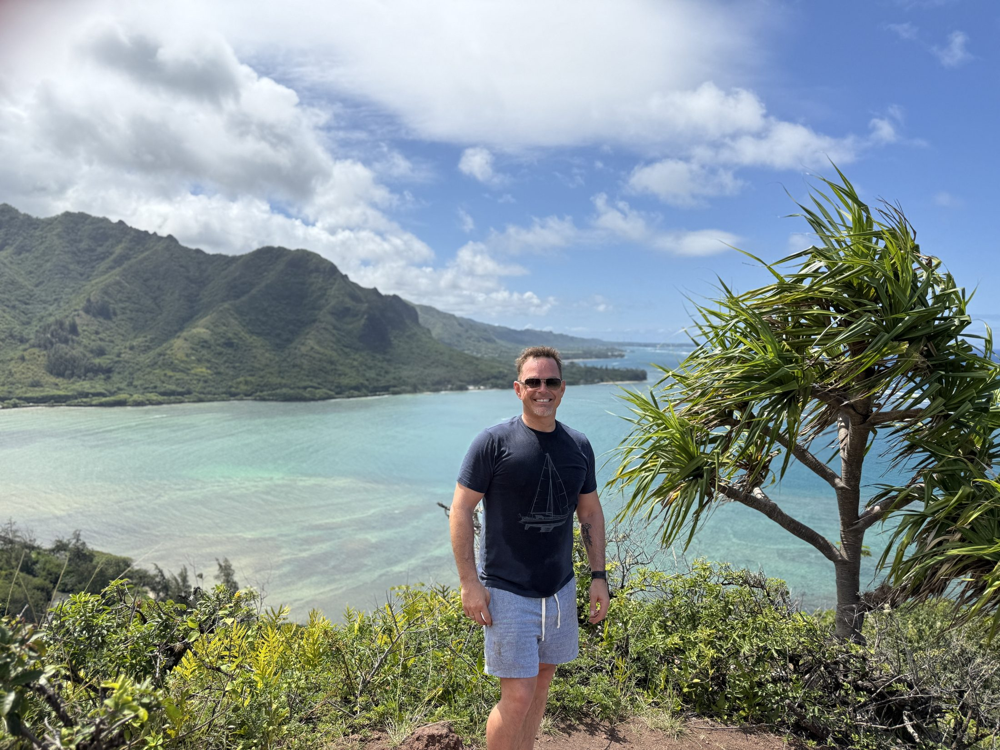

Systems engineer · Technical leader
Pete Carter
I build high-performing teams and resilient systems that solve real-world problems in demanding environments.
- ⌖ Melbourne, FL
- ✉ pete.carter@protonmail.com
- in linkedin.com/in/petecarter
My story
Purpose. People. Impact.
My journey began long before engineering—with mentors, teammates, and experiences that taught me the power of curiosity, discipline, and service.
Read my full story →Experience timeline
-
2021 — Present
Melbourne, FLPrincipal Systems Engineer Northrop GrummanLead systems engineering for complex mission programs and guide architecture, requirements, and verification.
-
2015 — 2021
Melbourne, FLPrincipal Systems Engineer L3Harris TechnologiesLed systems integration and developed architectures and interface-control documents across multiple programs.
-
2008 — 2013
Offutt AFB, NEElectrical Systems Specialist United States Air ForceMaintained and troubleshot electrical and environmental systems on RC-135 aircraft.
-
1998 — 2008
Multiple locationsManagerial & Operations Leadership Multiple rolesBuilt the leadership and problem-solving foundation that continues to shape my approach today.
Great systems start with listening well, asking better questions, and empowering the team. — Pete

Key impact & achievements
Mission success
Focused on the mission across every program and phase.
Team builder
Led and mentored 15+ engineering teams to deliver results.
Delivery excellence
Delivered systems and capabilities to the warfighter.
Value driven
Influenced programs with more than $250M in value.
Story chapters
- Rooted valuesLessons from family, faith, and community.
- First stepsEarly curiosity, hands-on learning, and a love for systems.
- Called to serveThe Air Force years that shaped discipline and perspective.
- Building & leadingEngineering complex systems and leading incredible teams.
- Looking aheadContinuing to learn, grow, and build what matters next.
Technical strengths
- Systems Engineering
- Modeling & Analysis
- Requirements & Architecture
- Risk Management
- Integration & Test
- CSISR / ISR Systems
- Verification & Validation
- Cross-functional Leadership
- Program Management
- Process Improvement
Education
B.S. Engineering Management
Embry-Riddle Aeronautical University · 2016
A.A.S. Electrical Systems Technology
Community College of the Air Force · 2011
View educationCertifications
- INCOSE Certified Systems Engineering Professional
- DAU Systems Planning, Research, Development & Engineering
- Project Management Professional
- Lean Six Sigma Green Belt
Awards & recognition
- Northrop Grumman Technical Excellence Award
- L3Harris Team Excellence Award
- USAF Commendation Medal
- Air Force Good Conduct Medal
The member’s full Living Résumé continues below this boundary.